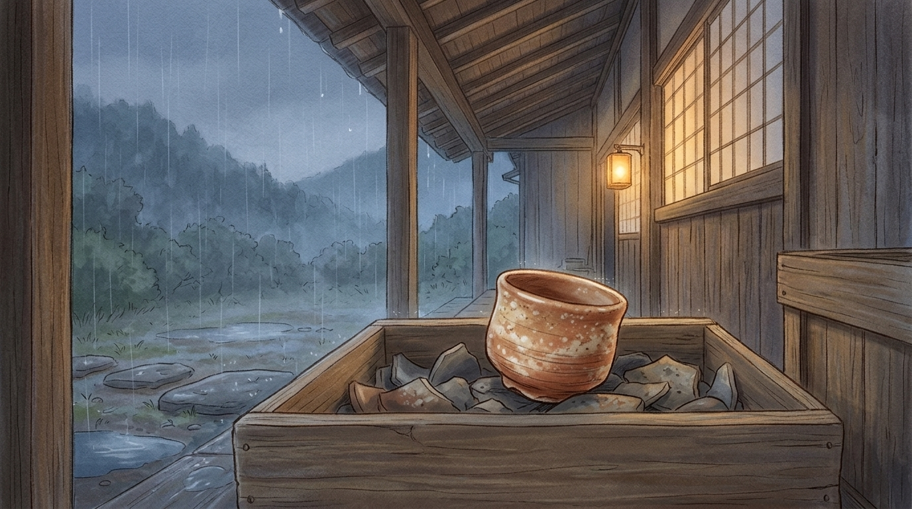

雨の軒下、びわ湖の付喪神

千二百度の炎の中で七日七晩を過ごしたあと、信楽の登り窯がゆっくりと冷えていく音は、どこかすこし冷ややかなため息に似ていた。
窯から出されたばかりの器たちは、朝の木漏れ日の下でひとつずつ検品される。まっすぐに立ち、指ではじけば澄んだ高い音を返す器たちは、薄紙に包まれて木箱に収められ、京都や東京の料理屋へと華やかに旅立っていく。
けれど、その小さな酒器――おちょこ――は、どれほどそっと平らな板の上へ置いても、ほんの少しだけ左へ傾いていた。高台の一か所がわずかに低く焼け上がり、職人の掌で小さく首を振られると、そのまま裏手の軒下へと運ばれた。
「これでは、客の前には出せんな」
しとしとと冷たい雨が降り始めた夕方。青い霧が下りた古い木箱の中には、口縁が欠けた湯呑みや皿のかけらが冷たく重なり合っている。あしたの朝には砕かれて土へ還される順番を待つ場所だった。すぐ脇に根を張っていた野生の山茶の枝から、雨粒に押された小さな茶の若葉がぽとりと落ち、おちょこの縁に緑のしずくとなって浮かんだ。
――同じ窯、同じ土、同じ炎から生まれたのに。どうして自分だけが捨てられなければならないのだろう。
雨水が器を満たすにつれ、胸の奥に冷たく黒い澱（おり）のような悔しさが積もっていった。ちょうどそのとき、薄暗い軒先でぴかりと光った信楽の灰釉と緑の若葉を見つけた一羽の大きなカラスが、ばさっと重い羽音を立てて舞い降りた。
冷たく硬いくちばしが器の縁をぐっと銜え、おちょこは夕闇の空へと引きさらわれた。眼下に遠ざかる窯元の屋根と、赤く点る町のあかり。やがて山を越え、視界いっぱいに暗い鏡――びわ湖――が広がった瞬間、湖上からの強い向かい風にあおられてカラスが低く鳴き、器は夜の水面へ向かって真っ逆さまに落とされた。

ばしゃん、と冷たい水しぶきが上がる。千二百度の窯で生まれた硬い肌を、秋のびわ湖の深い藍色が音もなく包みこむ。
暗い湖底に沈みながらも、器の縁に引っかかった一葉の茶の芽と、窯元へ向けた苦い思いだけは消えなかった。信楽の古い土と、びわ湖に千年のあいだ眠る水気（みずけ）、そして「なぜ自分だけを棄てたのか」という深い恨みが、水底の闇で静かに結びつく。
三日月の光が波紋を照らした深夜。冷えきった器の奥から青白い燐光がゆらめき、ころんと短い手足がほどけ、頭に緑の一葉を乗せた小さな「付喪神」が静かに目をひらいたのだった。
「……自分を捨てたあの主人を、このままにしておくものか。きっと戻って、祟ってやる……」
胸に鋭い怨念を抱えたまま、小さな影は冷たい水面を蹴り、信楽へと続く東の岸辺へ這い上がっていった。